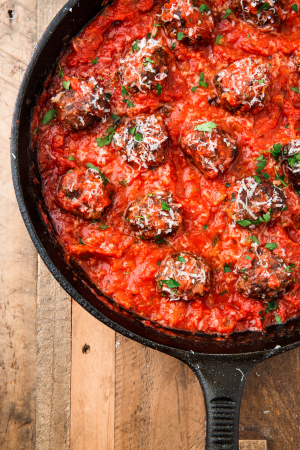

Keto Meatballs

Description
Delicious meatball recipe that is keto friendly.
Ingredients
- 1 lb. ground beef
- 1 clove garlic, minced
- 1/2 c. shredded mozzarella
- 1/4 c. freshly grated Parmesan, plus more for serving
- 2 tbsp. freshly chopped parsley
- 1 large egg, beaten
- 1 tsp. kosher salt
- 1/2 tsp. freshly ground black pepper
- 2 tbsp. extra-virgin olive oil
For the sauce
- 1 medium onion, chopped
- 2 cloves garlic, minced
- 1 (28-oz.) can crushed tomatoes
- 1 tsp. dried oregano
- Kosher salt
- Freshly ground black pepper
- In a large bowl combine beef, garlic, mozzarella, Parmesan, parsley, egg, salt, and pepper. Form into 16 meatballs.
- In a large skillet over medium heat, heat oil. Add meatballs and cook, turning occasionally, until golden on all sides, about 10 minutes. Remove from skillet and place on a paper towel-lined plate.
- To the same skillet, add onion and cook until soft, 5 minutes. Add garlic and cook until fragrant, 1 minute more. Add tomatoes and oregano and season with salt and pepper.
- Add meatballs back to skillet, cover and simmer until sauce has thickened, 15 minutes. Garnish with Parmesan before serving.
Nutrition (per serving): 318 calories, 21 g protein, 13 g carbohydrates, 3 g fiber, 7 g sugar, 21 g fat, 7 g saturated fat, 778 mg sodium, 0 g sugar alcohol